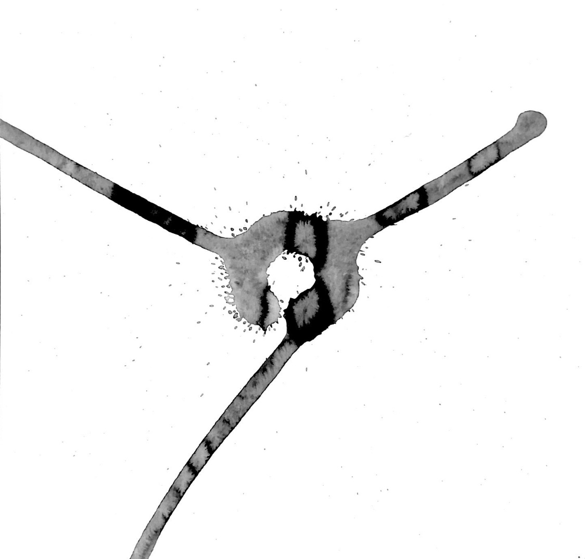

Depicted gravity
Depicted gravity inverts conventional modes of utilizing machines to generate form, where the machine controls the tools acting upon static mediums. Therefore by utilizing the machine as the support of the medium, the medium then becomes dynamic and allows for external forces to become part of the process. When forces such as gravity and motion become part of the drawing process, an opportunity presents that allows to record/capture/freeze movement that is otherwise invisible and ephemeral.
Collaboration with Ireny Abrahim & Laksh Agrawal
Grasshopper, Rhino, KUKA
2019